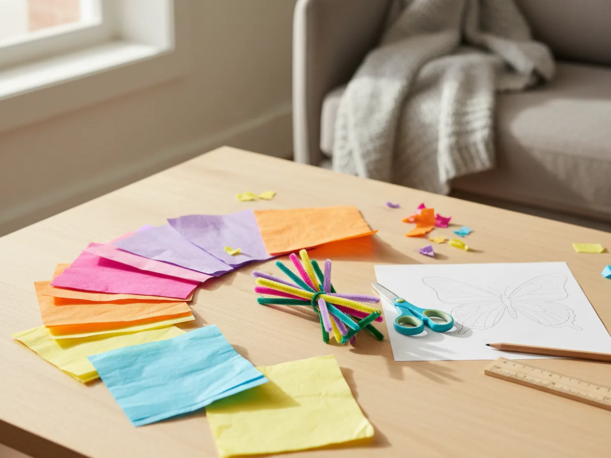
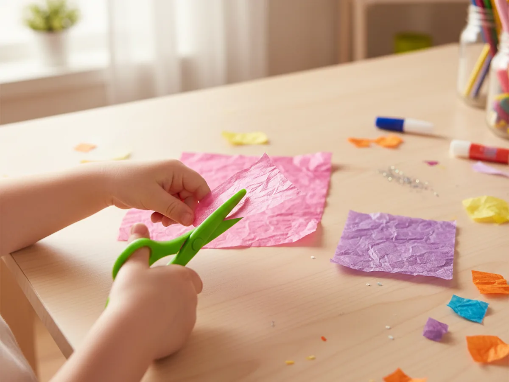
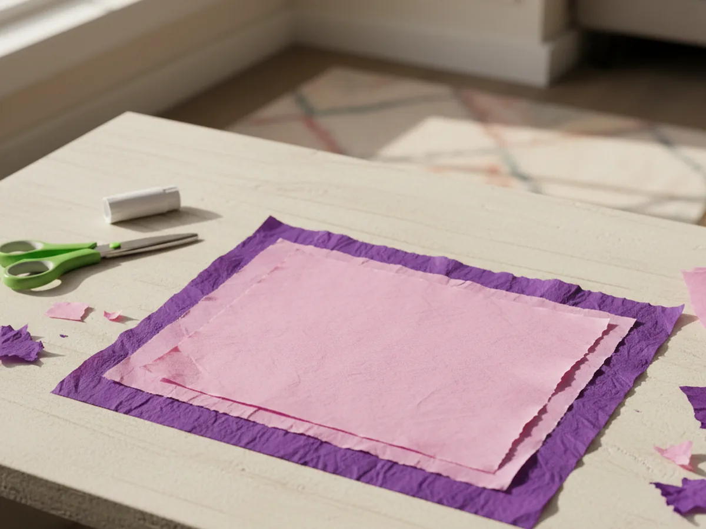
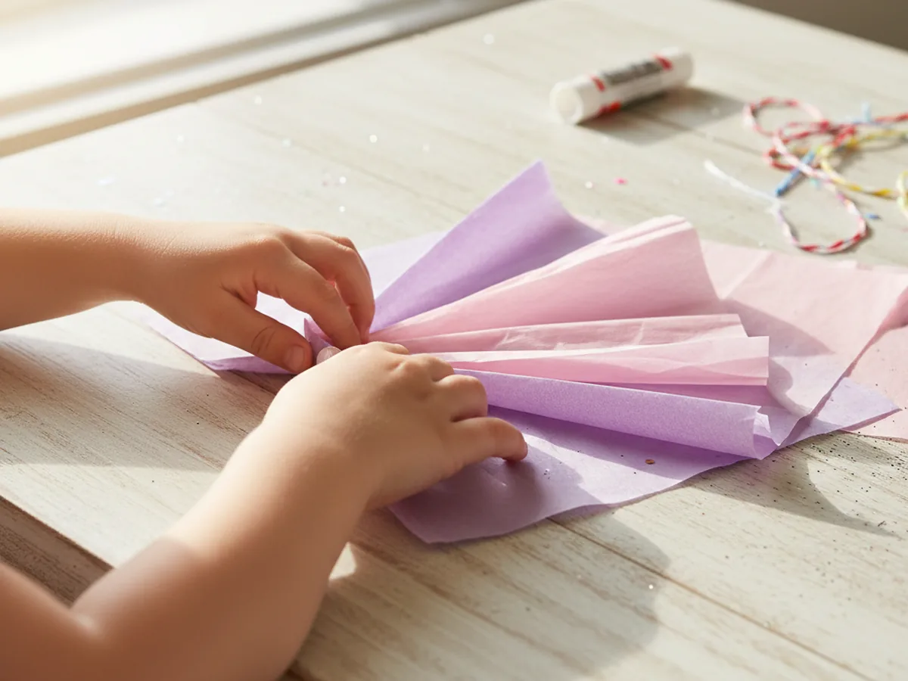
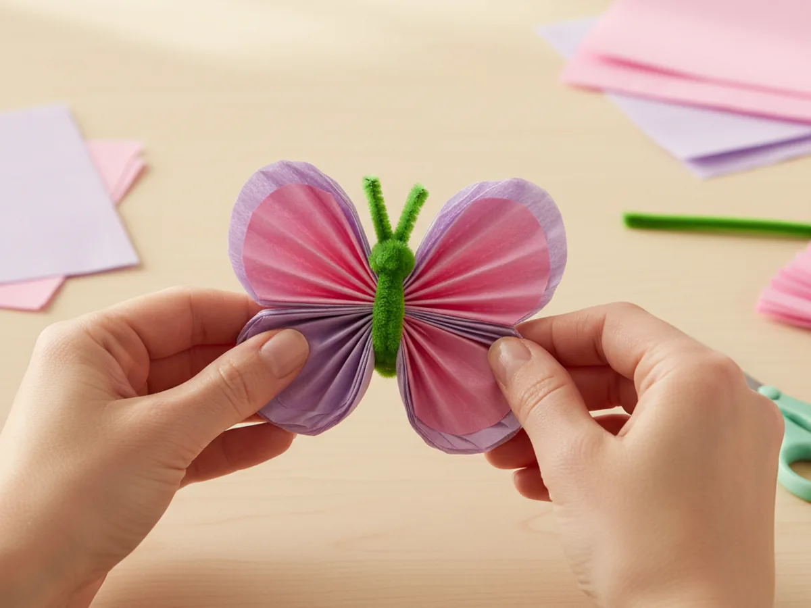
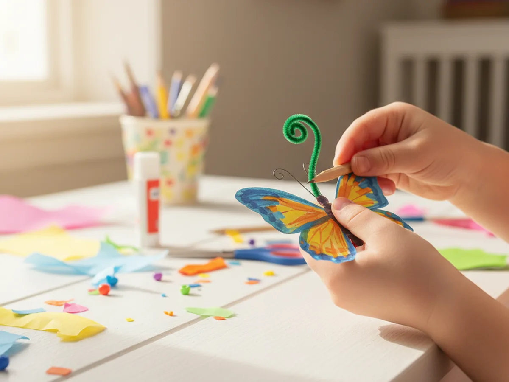
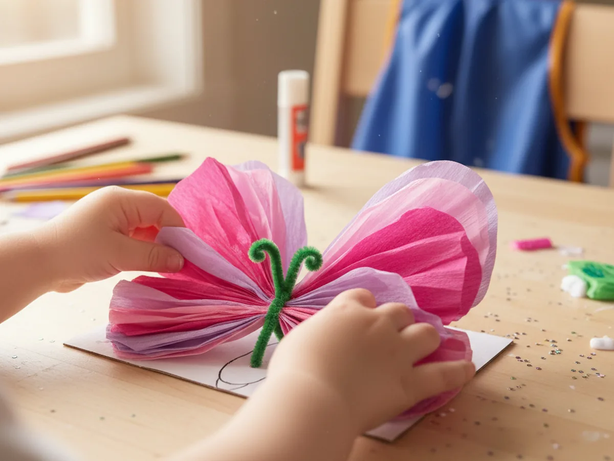

If you're looking for a craft that comes together quickly and leaves your child absolutely delighted, this tissue paper butterfly craft is a perfect pick. It takes about 20 minutes from start to finish, uses just three basic supplies, and the best part is there is no glue involved at all. Your little one will love seeing a soft, colorful butterfly appear right in their hands. 🦋
This method uses the accordion fold technique, which is easy enough for toddlers with a little help and completely doable for kids aged 3 and up on their own. The result is a beautiful, fluffy butterfly that looks like it could actually fly off the table.
Why Kids Love This Craft
There is something almost magical about the moment when you fan out the tissue paper and suddenly a butterfly takes shape. Kids go from holding a flat, folded stack to holding something soft, colorful, and three-dimensional in just a few seconds. That transformation moment is genuinely exciting for little ones, and it never gets old.
This tissue paper butterfly craft is also wonderfully tactile. Tissue paper is soft, lightweight, and satisfying to handle, especially during the fluffing step where kids get to gently pull each layer apart. That sensory experience is naturally calming and engaging at the same time, making it a great activity for energetic afternoons.
From a developmental standpoint, the accordion folding builds early fine motor skills and teaches children about symmetry in a hands-on way. Even young toddlers can participate in tearing tissue paper or helping to hold the folded stack while a grown-up twists the pipe cleaner. Every child gets to feel involved, capable, and proud of what they made.
What You'll Need
One of the nicest things about this tissue paper butterfly craft is how simple the supply list is. You probably already have scissors at home, which means you only need to grab two more things.
- Colorful tissue paper, at least two contrasting colors per butterfly for the best layered effect.
- Pipe cleaners, one per butterfly, for the body and antennae.
- Kids scissors, child-safe and easy to grip for small hands.
- Self-adhesive googly eyes, optional but adorable for adding a little character.
- A pencil, for curling the antennae tips.
- A ruler, helpful for measuring rectangles with older kids.
Step-by-Step Instructions
Follow these steps together and your butterfly will be ready to display in about 20 minutes. Go at your own pace and enjoy each step!
Step 1: Gather Your Supplies
Before you start, lay everything out on a clean table. Pick out two sheets of tissue paper in colors that look beautiful together. Think pink and purple, orange and yellow, or bright blue and green. Having the supplies ready before you sit down together keeps the energy focused on the fun rather than on hunting through drawers.

Step 2: Cut the Tissue Paper Rectangles
Cut each sheet of tissue paper into a rectangle. A good size to aim for is roughly 10 inches wide and 12 inches tall. One rectangle can be slightly smaller than the other, which will create a layered wing effect that looks really lovely in the finished butterfly. The exact measurements do not need to be precise, so let your child help with the cutting and do not worry about perfectly straight lines.

Step 3: Stack the Tissue Paper Layers
Place the smaller rectangle centered on top of the larger one, lining them up as evenly as you can. The two colors peeking out from around the edges will become the outer and inner wings of your butterfly. Gently hold the stack in place and take a moment to appreciate the color combination before you start folding.

Step 4: Accordion Fold the Tissue Paper
Starting from one of the short edges, fold the stacked tissue paper forward in a neat pleat about one inch wide. Then fold it back the other way, the same width. Keep going back and forth all the way across until the entire stack is folded into a long, narrow fan shape. Hold the fan tightly in the middle as you go to keep everything from slipping.
This step is the heart of the craft. Kids who have made paper fans before will catch on immediately. For younger children, hold the fan while they make each fold, and celebrate together as it gets shorter and more compact with every pleat.

Step 5: Secure the Center with a Pipe Cleaner
Pinch the folded fan firmly in the very center so it bows out gently on both sides, forming the basic butterfly wing shape. Take your pipe cleaner and wrap it tightly around that center point two or three times, then twist the ends together snugly so the fan stays in place. Leave two equal ends pointing straight up from the twist. These will become the antennae.

Step 6: Curl the Antennae
Take each of the two pipe cleaner ends and wrap it around the tip of a pencil. Hold the wrap in place for a few seconds, then gently slide the pencil out. You will be left with a sweet little spiral curl at the end of each antenna. This small detail makes a big difference in how charming the finished butterfly looks, and kids love doing this step all by themselves.

Step 7: Fluff Out the Wings
This is the most satisfying step of the whole craft. Starting from the outermost layer on one side, gently peel each sheet of tissue paper away from the center, fanning it outward. Work slowly, one layer at a time, on both sides. The butterfly wings will gradually fill out and become soft, full, and beautifully rounded.
If you added googly eyes earlier, now is the moment to stick them onto the pipe cleaner body right where it twists. Your tissue paper butterfly is done and ready to be admired. 🌸

Variations to Try
Mini Butterfly Mobile: Make five or six small butterflies using tissue paper cut into palm-sized rectangles. Tie a short length of thread around each pipe cleaner body and hang them at different heights from a small wooden dowel or a sturdy twig. The finished mobile is gorgeous in a child's bedroom window where light catches the colors.
Rainbow Butterfly: Layer three or four colors of tissue paper instead of two, arranging them from warm to cool tones. The accordion folds will mix the colors together beautifully as you fluff out the wings. This version is especially popular for spring decorating and looks stunning in a window with sunlight behind it.
Watercolor Coffee Filter Butterfly: Swap the tissue paper for plain round coffee filters. Let your child color them with washable markers, then spray lightly with water to make the colors bleed and blend together. Once the filters are fully dry, cut them into rectangles and use the same folding method. The result has a soft watercolor look that feels extra special.
Final Thoughts
This tissue paper butterfly craft is one of those projects that never fails to deliver a joyful moment. It is fast enough to hold a young child's attention from start to finish, hands-on enough to feel genuinely satisfying, and beautiful enough that you will genuinely want to keep it on display.
Whether you make one butterfly together or spend an afternoon making a whole garden of them, the time you spend folding, twisting, and fluffing together is what makes it truly worthwhile. Snap a photo of your finished butterflies and enjoy the pride on your little one's face. You made that together! 🎨
More Crafts You'll Love
If your child enjoyed this butterfly project, these other paper crafts are a great next step.